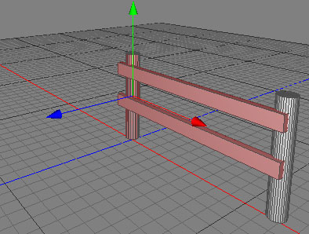

Clone Tool
The clone tool can be used to create multiple shifted copies of a polygon or point selection. If you want to create a fence for example, you can just create the first section (see the selection in the first image) of the fence. Using the Clone Tool along with negative X axis, the rest of the fence can be produced (as in the second image).


Cloning the polygon selection two times along the negative X axis..
Modes
The clone tool can only be applied to raw polygon objects. It's only available in polygon and point mode.


To use the clone tool, select some polygons/points of a raw polygon object. If you don't select any polygons/points, all polygons/points of the mesh will be cloned. Then call the menu command "Tools PolygonClone". Now set all the necessary parameters of the clone tool in the tool properties editor. After clicking the apply button, the selected polygons/points will be cloned.
PolygonClone". Now set all the necessary parameters of the clone tool in the tool properties editor. After clicking the apply button, the selected polygons/points will be cloned.
Keys
- none
Properties
- Copies: The number of clones to create.
- Holes: This value specifies the approximate ratio of holes to leave in the clone series. This number is only a rough value since the holes will be created randomly. A value of 0.5 doesn't necessarily mean that there are 50% holes.
- Direction: The direction in object space along which the clones will be created. The last clone will be at the end of the direction vector.
- Scale: The scale value will be interpolated from (1,1,1) at the beginning to scale at the last clone.
- Rotation: The clones will be rotated along the direction axis starting from 0 and ending at rotation.
- Position variation: Adds a random vector to the position of the clone.
- Scale variation: Multiplies the scale of the clone by a random scale.
- Keep ratio: The object proportions will be retained while using the scale variation property.
- Rotation variation: Adds a random rotation to the clone.
- Apply: Press the apply button to perform the clone tool to the current selection.